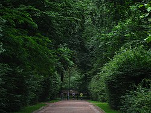

Стри́йський парк (Парк Кілінського) — один із найстаріших та найгарніших парків Львова, пам'ятка
садово-паркового мистецтва національного значення. Розташований у місцевості Софіївка Галицького району.
Вважався найгарнішим парком міжвоєнної Польщі.

Парк Яна Кілінського у 1910-х роках
Околиця в давнину складалася з піщаних надм, крутих ярів та долинок.[1] Облаштування парку розпочато у 1879 році
за ініціативи міського радника Станіслава Немчиновського. Стрийський парк був запроєктований відомим майстром
садово-паркового мистецтва інженером міських плантацій Арнольдом Рерінгом в 1876–1877 роках на території
колишнього, так званого «першого», Стрийського кладовища, закритого у 1823 році. Було висаджено 40 тис. дерев:
смереки, клени, явори, екзотичні породи, такі, як червоний дуб, тюльпанне дерево, червонолистий бук, гінкго. У
1887 році Рада міста Львова розглядала питання спорудження у Львові пам'ятника Яну Кілінському — одному з
учасників повстання під проводом Тадеуша Костюшка. Місцем спорудження було призначено новостворений парк, який
отримав назву парку Кілінського. Вже у 1888 році розпочалася робота над спорудженням монумента, дорученого
відомому українському скульптору Григорію Кузневичу[2] та Юліану Марковському. Для цього з Миколаєва була
доставлена кам'яна брила. Пам'ятник було відкрито 18 червня 1895 року, де він стоїть і дотепер. Однак назва
«Парк Кілінського» не прижилася, а назва «Стрийський парк» виявилась популярнішою та пройшла випробовування
часом.

Алея у верхній частині парку
Спочатку парком була лише його нижня частина. Верхня була пустирем. На ній, у 1894 році була проведена Крайова
виставка, для якої були збудовані численні виставкові павільйони. До цієї події у Львові відкрили електричний
трамвай, а 1907 року до території було підведено трамвайну колію. У 1936 році трамвайну колію було продовжено до
вулиці Козельницької, а звідки до Стрийської рогатки. Однак вже у 1940 році ділянка від вулиці Івана Франка до
Стрийської рогатки була розібрана, а також була закрита трамвайна лінія у Стрийському парку, що
використовувалися для обслуговування «Східних торгів»
Під час першої світової в Стрийському парку загинув австрійський летун, могила була біля Палацу Мистецтв. У
листопаді 1918 року тут були могили українських січових стрільців, яких згодом ексгумували та перепоховали на
цвинтарі.
У 1952 році головний вхід у парк прикрасили легкою аркою корінфського ордеру за проєктом радянського архітектора
Генріха Швецького-Вінецького. У радянський період територію парку збільшили за рахунок пустирів і невживаних
ділянок, встановили чавунну огорожу, посадили нові породи дерев і чагарників.
У 1920-их роках один із путівників Львовом писав:
На півдні міста лежить Стрийський парк, відомий як найгарніший парк країни. Він користується великою
любов'ю
жителів Львова. Позаду парку на великому плато розміщений «Східний ярмарок». Величезна торговиця має
місце
тут щороку, в другий тиждень вересня. Серед цих будинків є Рацлавицька панорама, що містить чудову
панораму
авторства Яна Стики і Войцеха Коссака, котра зображує битву при Рацлавицях. Сусіднє приміщення містить
цікаву діораму «Львів в 18 столітті і
У 2008 році у верхній частині Стрийського парку було відкрито перший в Україні скейт-парк. У 2009 році на
кошти, виділені урядом Республіки Польща, було реставровано пам'ятник Яну Кілінському. З 2009 року триває
реконструкція парку, зокрема, відновлюється зовнішнє освітлення, перемощуються доріжки.
Парк займає понад 52 гектари. Він розташований у Галицькому районі Львова, між вулицями Івана Франка,
Стрийською,
Уласа Самчука і Козельницькою. Складається з трьох ландшафтних частин:
- зона нижніх партерів — по дну балки
- лісопаркова зона — на схилах балки
- верхня тераса, яка фактично є територією колишньої виставки «Східні торги».
Основою планування паркової території є глибока ерозійна долина, якою протікав струмок Сорока (ліва притока
Полтви); тепер тут пішохідна доріжка, яка зв'язує верхню терасу з нижньою частиною парку.
У Стрийському парку налічується понад 200 видів дерев і рослин, є оранжерея, альпінарій, платанова ,липова,
каштанова і вільхова алеї. Тут зростають червоний дуб, тюльпанне дерево, магнолія, сосна Веймута, японський
бузок, маньчжурська аралія, ґінко дволопатеве, тис ягідний, клен японський, тсуга канадська, бук червоний (форма
бука звичайного), катальпа звичайна, коркове дерево амурське, платан кленолистий і кипариси.
Неподалік від головних воріт розташований ставок з лебедями. У парку є також спортивні корпуси Львівської
політехніки (розташовані в будівлях колишнього Палацу Мистецтв та Рацлавицької панорами), головний корпус
Української академії дизайну, кінотеатр «Львів», три ресторани, Львівська торгово-промислова палата, бібліотека
№ 18.